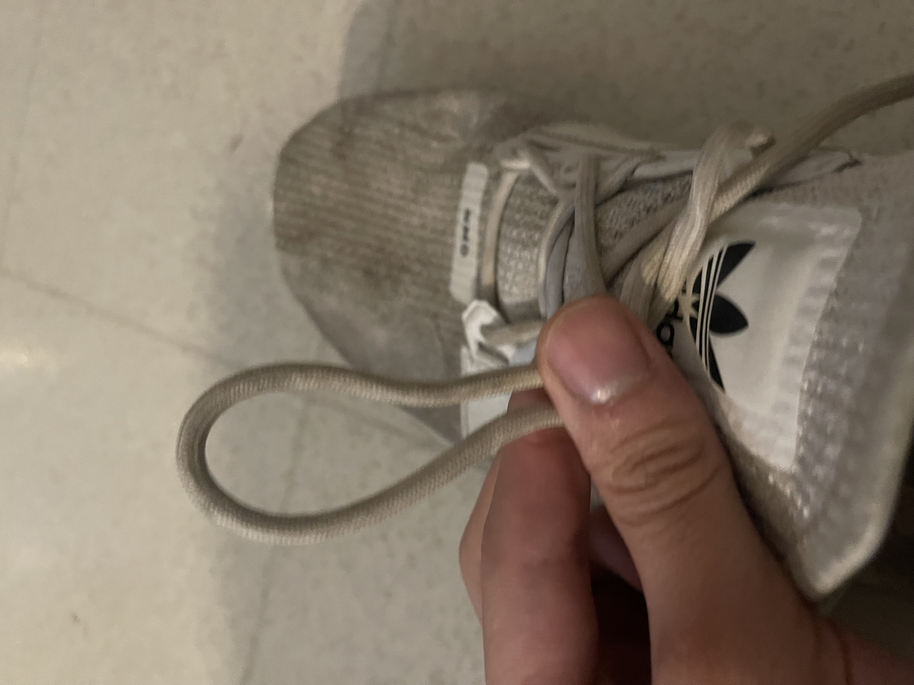
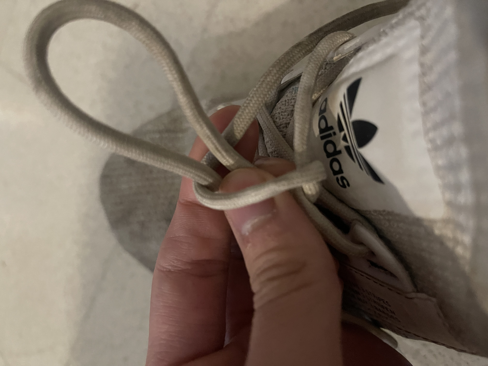
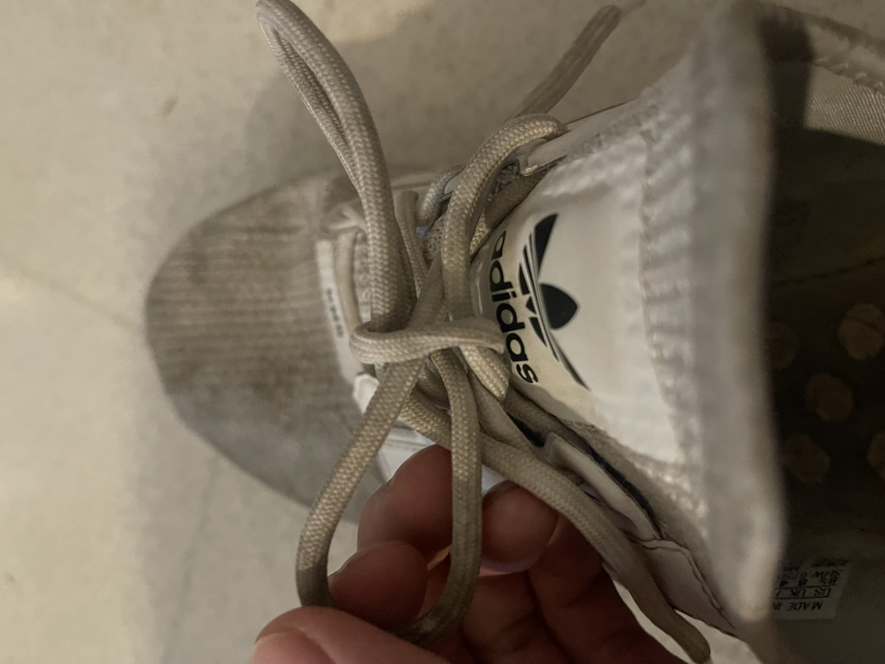

No matter what kind of shoe you have, they are most likely going to have shoe laces. There are many different ways that someone could tie their shoes but I am going to show you how I do it.
Step 1
Grab both ends of the laces and criss cross them. From here, you want to overlap one over the other so that it looks like this
Step 2
Now you should have two ends of the laces once again but this time take one end and make it into a loop like this:

Step 3
Once your loop is made, take the other end of the other lace and wrap it around so it looks like this:

Step 4
After your loop is wrapped with the other lace, you want to pull the lace that was wrapped around the loop through itself. This does not mean pull it completely through though. Ideally, you should pull the lace about half way through. This then creates another loop that should look like this.

Step 5
At this point, your shoe should almost be tied. The knot should feeling a little loose but that is okay because it's an easy fix! To tighten the knot all you have to do is to pull each loop. When pulling each loop, be careful to not to pull too much or else the lace might get pulled through entirely. If everything is done correctly, it should look like this.